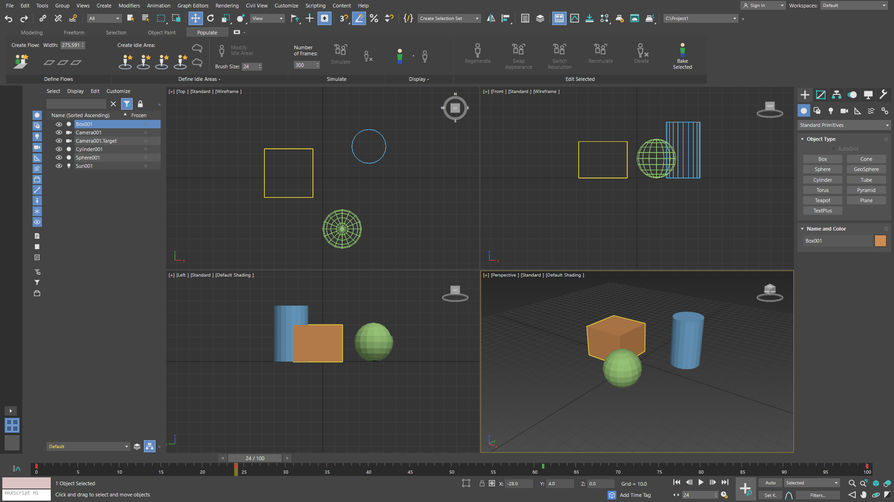
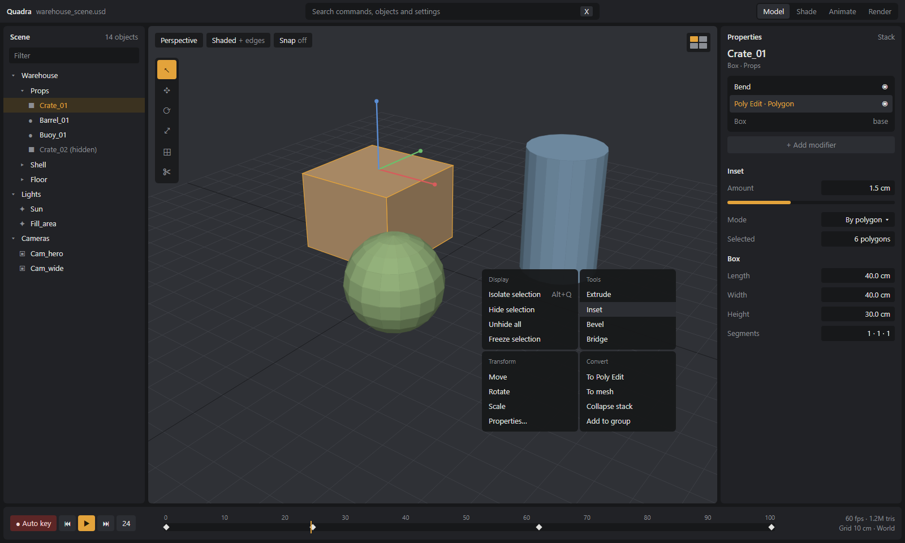
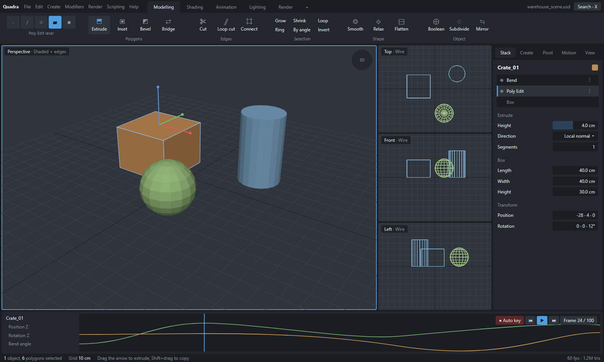

Quadra main window: three directions
- All three show the same scene and the same task: the box selected, frame 24.
- They are static pictures for picking a direction. Nothing here is built yet.
- B and C use our own names (Stack, Pivot, Poly Edit, Workbench Bar), per the legal checklist in architecture.html.
- Every panel is a dock in all three, so the choice is about the default layout and the look, not a lock-in.
- Click a picture to open the live mockup. Write notes under each, then press Copy my notes and paste them back to me.
A. Max layout
A near copy of the 3ds Max 2026 default screen at 1920x1080: menus, main toolbar, ribbon tabs, Scene Explorer on the left, 2x2 views with bracket labels and view cubes, command panel with the Editable Poly stack and rollouts, time slider, track bar, status line, key and playback controls, navigation buttons. Icons are our own drawings. It uses Max's own names (Editable Poly, Scene Explorer), which the legal checklist says to rename before any release.

B. Focus
One big view by default (the 2x2 grid is one click away, top right), scene tree on the left, properties and stack on the right. Command search (X) sits in the title bar and the quad menu is shown open. Amber accent. The most modern; hides more on first launch.

C. Workbench
Workspace tabs (Modelling, Shading, Animation and so on) each with their own Workbench Bar of grouped tools. One large view plus three small ortho views, and a curve strip instead of a plain time slider. Blue accent. Best for tool discovery; the busiest top area.
